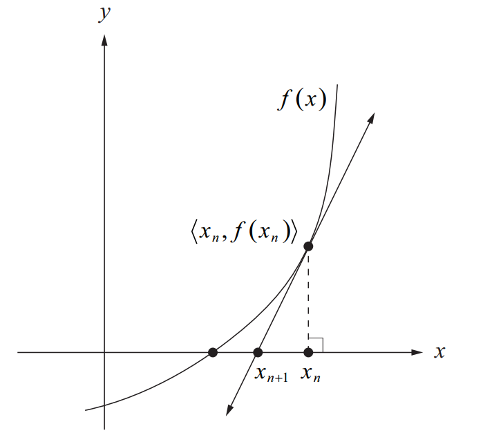

Introduction
This article introduces the fast inv-sqrt algorithm, which is firstly used in Quake III Arena.
And btw, this article is simply translated from the blog I wrote on CSDN: https://blog.csdn.net/noahzuo/article/details/51555161
The Source Code
So here is the source code:
1 | float Q_rsqrt( float number ) |
And this function takes a 32-bit floating-point number $x$, and output the reciprocal of the square root $\frac{1}{\sqrt{x}}$of this number.
32-bit Floating-Point Number
Since this algorithm was designed with the IEEE 754-1985 32-bit floating-point specification in mind, it is necessary for us to get to know the structure of a floating-point number.
You can refer to Single-precision floating-point format for more information and I’ll skip the explanation since this is not the point of this article.
In short, for a positive floating-point number $x$, we have
$$ x = 2^{e_x}(1 + m_{x}) $$
which $e_x$ is the 8-bit exponent and $m_x$ is the fraction part.
Moreover, to convert a floating-point number to a integer, we have
$$ I_{x} = E_{X}L + M_{x} = L(e_{x} + B + m_{x}) $$
which L is $2^{23}$ and B is $127$.
Algorithm
Newton’s Method
We can find successively better approximations to the roots of a real-valued function using Newton's method.
Suppose a single-variable function $ f $ defined for a real variable $ x $, if the function satisfied sufficient assumptions and the initial guess is close, then
$$x_{1} = x_{0} - \frac{f(x_{0})}{f^{‘}(x_{n})}$$
is a better approximation of the root than $x_{0}$.
The process is repeated as
$$x_{n + 1} = x_{n} - \frac{f(x_{n})}{f^{‘}(x_{n})}$$
until a sufficiently precise value is reached.

The process iteration is like:

Black Magic
The magic is i = 0x5f3759df - ( i >> 1 ), but how does it work?
For function
$$y = \frac{1}{\sqrt{x}}$$
, firstly we have:
$$f(y) = \frac{1}{y^{2}} - x = 0$$
then we convert it to Newton's method style:
$$y_{n+1} = \frac{y_{n}(3 - xy^{2}_{n})}{2}$$
So for $ x = 2^{e_{x}}(1 + m_{x}) $, we have:
$$ log_{2}{x} = e_{x} + \log{2}{1 + m_{x}}$$
and since $m_{x} \in [0, 1)$, we have:
$$ log_{x}{1 + m_{x}} \approx m_{x} + \sigma $$
where $\sigma \approx 0.0430357$ yields the optimal approximation.
Thus there is the approximation
$$ log_{2}{x} \approx e_{x} + m_{x} + \sigma $$
Finally we have:
$$I_{x} = E_{x}L + M_{x} = L(e_{x} + m_{x} + \sigma + B - \sigma) \
\approx Llog_{2}{(x)} + L(B - \sigma)$$.
So:
$$I_{y} \approx \frac{3}{2}L(B -sigma) - \frac{1}{2}I_{x}$$,
which is, in the form of code:
1 | i = 0x5f3759df - ( i >> 1 ); |
$$\frac{3}{2}L(B - \sigma) = 0x5f3759df$$